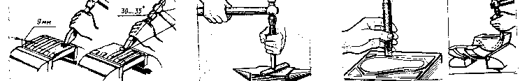
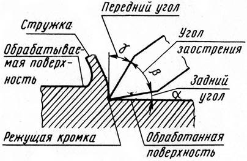

РУБКА МЕТАЛЛА. ОСНОВНЫЕ СВЕДЕНИЯ
РУБКА МЕТАЛЛА
Определение:
Рубкой называется слесарная операция, при которой с помощью режущего (зубила, крейцмейгеля и др) и ударного (слесарного молотка) инструмента с поверхности заготовки удаляют лишние слои металла или заготовка разрубается.
ВИДЫ РУБКИ
ЧЕРНОВАЯ
ширина снимаемого слоя от 1,5...2мм
ЧИСТОВАЯ
ширина снимаемого слоя от 0,5...1мм
ВИДЫ РАБОТ ВЫПОЛНЯЕМЫЕ РУБКОЙ:
1. Удаление лишнего слоя металла;
2. Разрубание заготовок на части;
3. Вырубание отверстий в листовом материале;
4. Прорубание смазочных канавок.
точность рубки 0,4...1мм


ЗАДНИЙ УГОЛ
Образуемый задней поверхностью и поверхностью резания, должен быть очень небольшим (3...8°)
ПЕРЕДНИЙ УГОЛ
Угол между передней поверхностью и плоскостью, проведенной через режущую кромку перпендикулярно обработанной поверхности
УГОЛ РЕЗАНИЯ
Угол, образованный между передней и задней поверхностями инструмента (3...8°)
УГОЛ ЗАОСТРЕНИЯ
Угол между передней и обрабатываемой поверхностями, равный сумме угла заострения и заднего угла
1. Обрабатываемой – называется поверхность, с которой будет сниматься слой материала;
2. Обработанной – называется поверхность, с которой стружка снята;
3. Поверхность резания – поверхность, образуемая на заготовке главной режущей кромкой инструмента;
4. Передняя поверхность – поверхность, по которой сходит стружка при резании;
5. Задняя поверхность – поверхность, обращенная к обработанной поверхности заготовки.